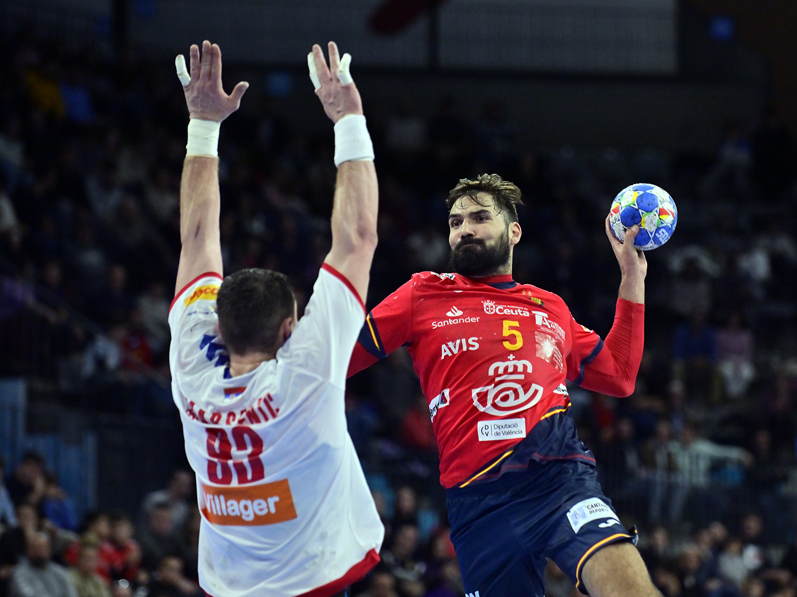
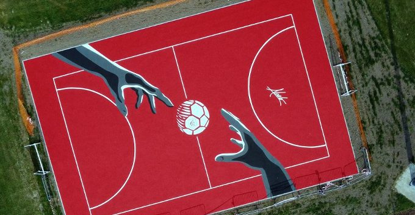
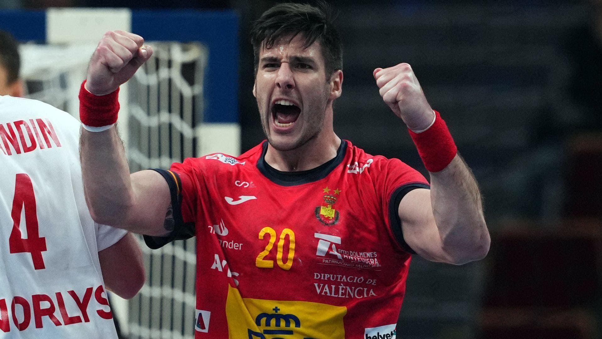

A lo largo de los años, el Club de Balonmano Sergio ha forjado una historia llena de éxitos, esfuerzo y
crecimiento constante. En esta galería, compartimos algunos de los momentos más significativos de nuestra
trayectoria: desde victorias en competiciones locales y regionales, hasta los instantes más íntimos en
entrenamientos y actividades sociales. Cada imagen cuenta una historia, una emoción vivida por nuestros
jugadores, aficionados y todos los que formamos parte de esta gran familia.
Nos enorgullece ser un club que no solo se destaca por su desempeño en la cancha, sino también por los
valores que inculca en cada uno de sus miembros: trabajo en equipo, respeto, dedicación y superación
personal. Estas imágenes son testigos de todo lo que hemos logrado juntos.
Esta imagen captura uno de los momentos más emocionantes de nuestra historia reciente: la celebración de
nuestro equipo tras conquistar el torneo regional. Fue un partido reñido que nos tuvo al borde del
asiento durante 60 minutos intensos. Con cada gol, el equipo demostraba su compromiso y pasión por el
balonmano, culminando en una victoria que no solo representó un trofeo, sino también el esfuerzo de
meses de duro trabajo y entrenamiento. La alegría y el orgullo en los rostros de nuestros jugadores
reflejan el espíritu inquebrantable de nuestro club.

En este momento inmortalizado durante uno de nuestros entrenamientos, se puede ver la dedicación de cada uno
de nuestros jugadores y del cuerpo técnico. Para nosotros, el entrenamiento no es solo una preparación
física, sino también mental. Aquí trabajamos cada aspecto técnico, táctico y estratégico, ajustando cada
detalle para que en los partidos el equipo funcione como una máquina bien engrasada. La cooperación entre
los jugadores, el aprendizaje constante y la mejora en cada sesión son la clave de nuestros éxitos en la
cancha.

Esta imagen corresponde a nuestra jornada de puertas abiertas, un evento anual que organizamos con el fin de
acercar al club a la comunidad y a los aficionados. En este día especial, nuestros seguidores pudieron
compartir tiempo con los jugadores, conocer sus historias y participar en diversas actividades relacionadas
con el balonmano. Fue una jornada repleta de sonrisas, juegos y aprendizaje, donde fortalecimos el vínculo
que nos une con nuestra afición. Para muchos jóvenes que asistieron, fue la primera vez que tomaron un balón
de balonmano, y quién sabe, quizás entre ellos estén las futuras estrellas del club.

En esta fotografía podemos ver uno de los momentos más emotivos de nuestra temporada: la entrega de premios
a los jugadores más destacados. En esta ceremonia, no solo premiamos el rendimiento en los partidos, sino
también el esfuerzo diario, la actitud en los entrenamientos y el compañerismo dentro y fuera de la cancha.
Para nosotros, cada jugador es una pieza fundamental del equipo, y en esta ocasión, celebramos a aquellos
que fueron más allá, demostrando liderazgo, constancia y un amor incondicional por el deporte. Sin duda,
momentos como este refuerzan la unión y los valores de nuestro club.